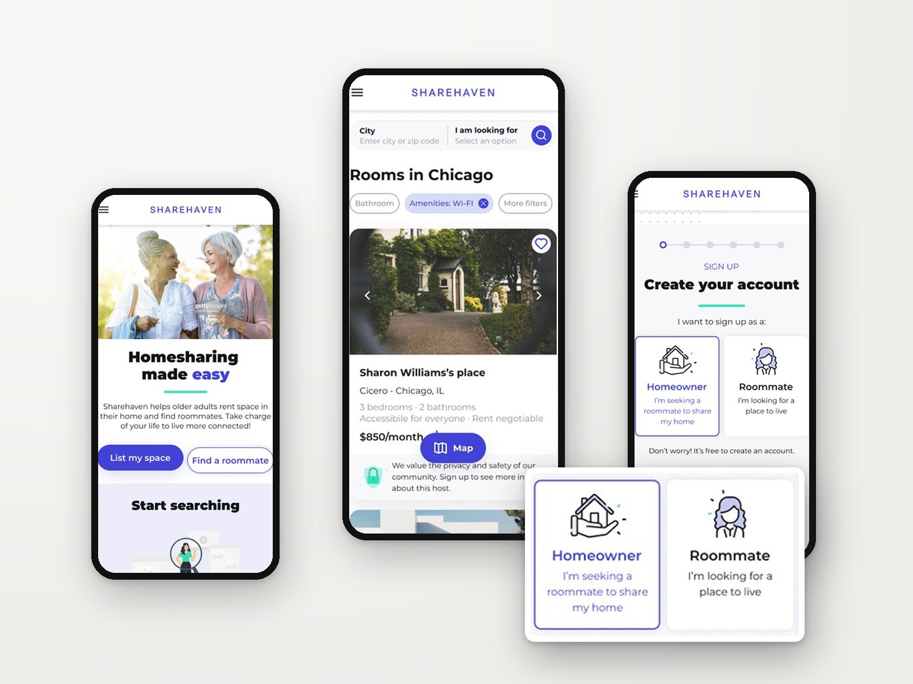
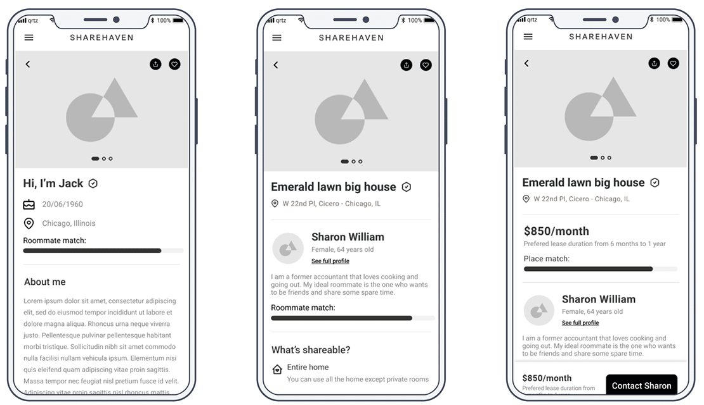
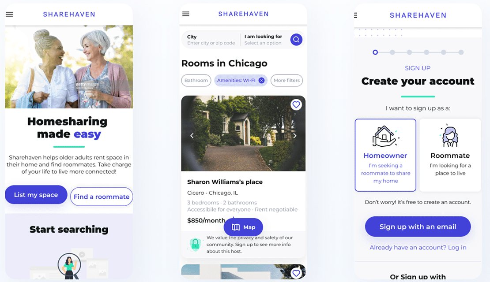
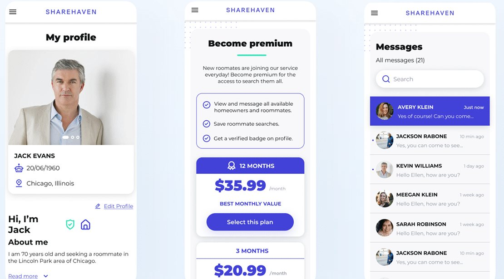
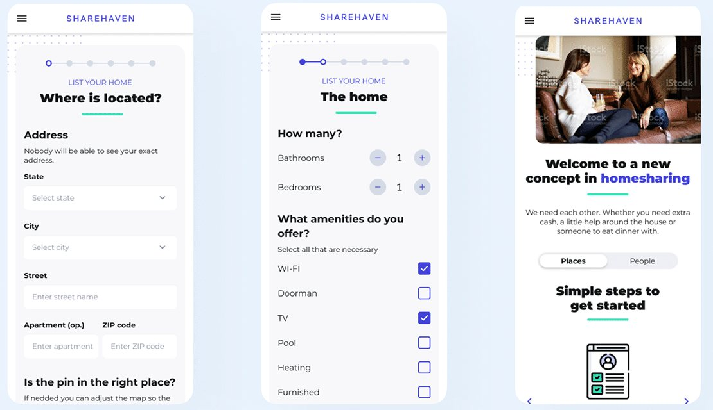
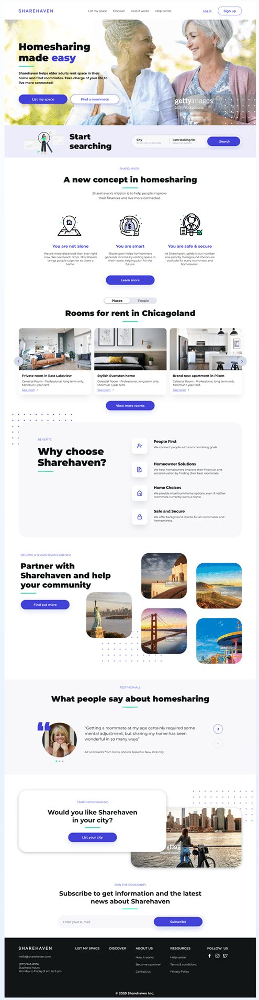
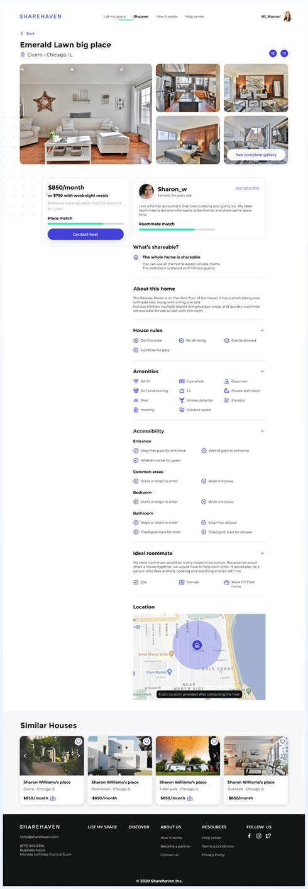

09Responsive web · UX/UIWeb responsive · UX/UI · 2021
Sharehaven — ChicagoSharehaven — Chicago
A homesharing platform that helps people going through major life transitions find compatible housemates in Chicago.
Una plataforma de vivienda compartida que ayuda a personas atravesando grandes cambios de vida a encontrar compañeros de casa compatibles en Chicago.

Problem statement
Problema
People going through major life transitions, such as health issues, divorce, losing a spouse or becoming empty nesters, often need temporary support and companionship at home. Finding a reliable, compatible housemate is slow and overwhelming and lacks personalized matching, so many people remain isolated during critical life changes.
Las personas que atraviesan grandes cambios de vida (problemas de salud, un divorcio, la pérdida de su pareja o el nido vacío) suelen necesitar apoyo y compañía en casa. Encontrar un compañero de casa confiable y compatible es lento, abrumador y no ofrece recomendaciones personalizadas, así que muchos quedan aislados en momentos críticos.
How might we simplify finding and matching compatible housemates for people undergoing life transitions?
¿Cómo podríamos simplificar la búsqueda de compañeros de casa compatibles para personas que atraviesan cambios de vida?
Quantitative research (online survey, ~40 people)
Investigación cuantitativa (encuesta online, ~40 personas)
User needs
Necesidades
- Trust and safety: background checks and identity verification.Confianza y seguridad: verificación de antecedentes e identidad.
- Compatibility: matching by lifestyle, preferences and values.Compatibilidad: coincidencias por estilo de vida, preferencias y valores.
- Ease of use, especially for older adults.Facilidad de uso, sobre todo para adultos mayores.
- Flexibility for short-term or long-term arrangements.Flexibilidad para acuerdos de corto o largo plazo.
Competitor analysis
Análisis de competencia
Silvernest focuses on older adults with personalized matching and background checks, but lacks resources for people in significant life transitions. Roommates.com targets a broad audience with basic matching and isn't focused on the emotional side of sharing a home. Sharehaven's opportunity: safety and verification, detailed profiles, in-app messaging and an interface designed for people less familiar with technology.
Silvernest se enfoca en adultos mayores con recomendaciones y verificación de antecedentes, pero no acompaña a quienes atraviesan cambios de vida importantes. Roommates.com apunta a un público amplio con coincidencias básicas y no atiende el lado emocional de compartir casa. La oportunidad de Sharehaven: seguridad y verificación, perfiles detallados, mensajería dentro de la app y una interfaz pensada para personas menos familiarizadas con la tecnología.
User personas
User personas
Sarah Thompson, 55, Chicago
Sarah Thompson, 55, Chicago
Marketing manager and recent empty nester. Feels lonely and wants a compatible housemate for companionship and to reduce expenses while keeping her independence.
Gerente de marketing con el nido recién vacío. Se siente sola y busca alguien compatible para tener compañía y reducir gastos sin perder independencia.
David Garcia, 48, San Francisco
David Garcia, 48, San Francisco
IT consultant adjusting to living alone after a divorce. Finds existing platforms overwhelming and not built for someone going through a life change.
Consultor de IT que se está adaptando a vivir solo después de un divorcio. Las plataformas existentes lo abruman y no están pensadas para alguien en un cambio de vida.






Outcome
Resultado
The responsive website launched and is live in Chicago, with the matching, verification and messaging flows designed in this project.
El sitio responsive se lanzó y está en uso en Chicago, con los flujos de búsqueda de compañeros, verificación y mensajería diseñados en este proyecto.